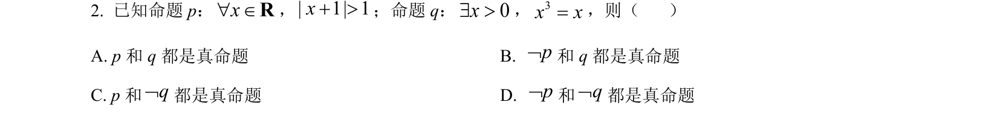
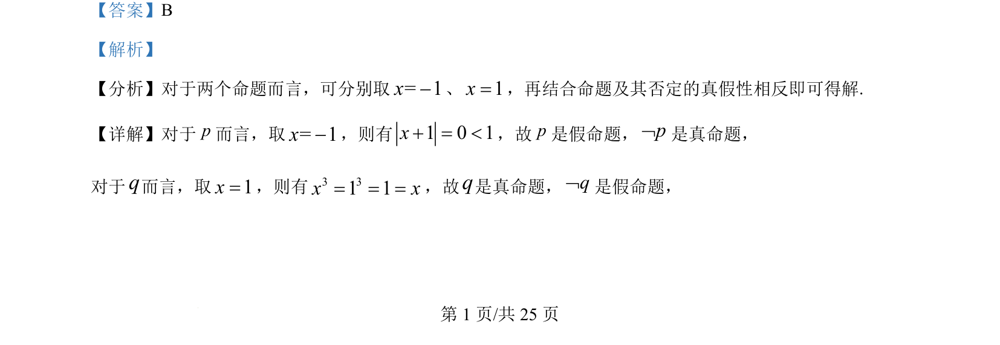
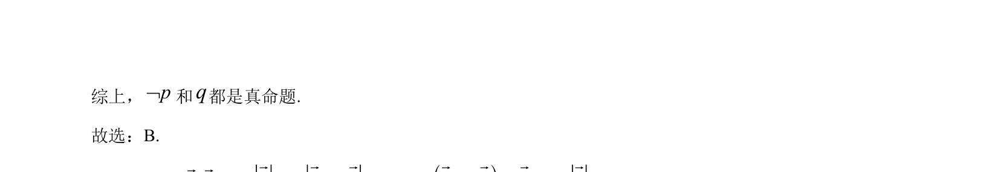

考点：命题真假判断 命题的否定 反例法

本题考查通过赋值法判断命题真假及其否定的逻辑关系。


📄 原 PDF 第 1 页：
素材/真题/吉林/2008-2024·（吉林）数学高考真题/2024年高考数学试卷（新课标Ⅱ卷）（解析卷）.pdf
【答案】B 【解析】 【分析】对于两个命题而言，可分别取= 1x-、1x=，再结合命题及其否定的真假性相反即可得解. 【详解】对于p而言，取= 1x-，则有1 0 1x+ = <，故p是假命题，pØ是真命题， 对于q而言，取1x=，则有3 31 1x x= = =，故q是真命题，qØ是假命题，